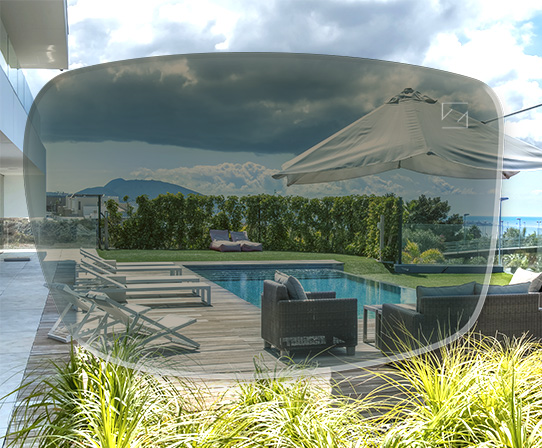
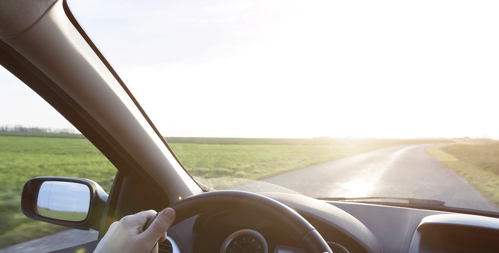

For excellent wearer comfort and greater safety on the road. ZEISS DriveSafe Lenses are optimised specially for driving. These lenses help you enjoy better vision at night or in difficult weather conditions, protect your eyes from reflections and make it easier for you to shift your viewing focus – quickly and often. The optimum extra safety feature from your everyday pair of glasses.!
ZEISS DriveSafe Lenses.
The everyday pair of glasses for driving
Being able to see well is a prerequisite for safe driving because on the road our eyes are working overtime: constantly shifting focus between the street, the GPS and the rearview and wing mirrors. Inclement weather or adverse light conditions often make it difficult to see. ZEISS DriveSafe Lenses – available as single-vision and progressive lenses – minimise this visual stress when driving and make it easier for drivers to see, enabling you to arrive at your destination safely and stress-free.
Optician Search
Find a Zeiss Optician near you
Reduced reflections. Helping you better estimate distances.
Unfavourable weather, poor light conditions, irritating glare (e.g. from the headlights of oncoming cars, street lamps or reflections off the wet street) and shifting your viewing focus quickly and often are potential visual challenges for many drivers. The design of ZEISS DriveSafe Lenses accommodates drivers' special visual needs.
These lenses help you:
judge distances and driving situations more quickly,
improve your vision at night,
reduce irritations caused by reflected lights and
ensure you can quickly and easily adjust your viewing focus to your driving surroundings.
See better during the day, in twilight conditions and at night.
Our pupil size changes over the course of the day: the more surrounding light there is, the smaller the pupil – and vice-versa. Traditional spectacle lenses don't accommodate this change within their designs. DriveSafe Lenses from ZEISS stand out from the crowd because their optimised lens design accommodates the wearer's enlarged pupil diameter when driving in poor light. This lens design also increases contrast, improves vision in inclement weather and reduces possible distortions within the lens periphery – particularly with progressive lenses.
The end result: you have better vision and can more precisely judge viewing distances in stressful driving situations e.g. at night or in rain, fog or snow.
Enjoy integrated professional protection. Prevent unpleasant glare or scratches.
ZEISS DriveSafe Lenses are equipped with a special premium anti-reflective coating. This reduces the subjective sensation of glare* – e.g. from oncoming vehicles with LED or Xenon headlights – and effectively protects your lenses from scratches and the adhesion of dirt particles.
A more comfortable driving experience with progressive lenses.
ZEISS DriveSafe for extra convenience.
ZEISS DriveSafe is also available in a progressive lens design. The specially optimised near, mid-distance and transition zones ensure comfortable shift of viewing focus, reducing horizontal head movements and enabling significantly more dynamic vision for the wearer.
Suitable for driving and daily use. Your new everyday glasses.
ZEISS DriveSafe Lenses are perfect for your everyday pair of glasses: they feature a large, wide distance zone, an optimised mid-distance zone and a near viewing zone suitable for both reading and working. This all-round solution makes driving a more comfortable experience, while meeting the needs of your day-to-day life.
Less irritating glare, better contrast. ZEISS DriveSafe sunglasses with a polarisation filter.
Enjoy professional sun protection from your ZEISS DriveSafe Lenses, available with an optional tint and polarisation filter. The special coating improves contrast perception while reducing irritation caused by glare because of harsh sunlight or reflections from reflective surfaces. Enjoy exceptionally clear and extremely comfortable vision. Just enjoy the ride.

ZEISS DriveSafe. Good vision and sun protection – all in one lens. At record-breaking speed.
A pair of glasses for every situation: these self-tinting lenses also work as sunglasses. They darken in seconds and clear up in just a few minutes. And of course they feature 100% UV protection.
Scratches and dirt don't stand a chance. More robust than ever.
High-performance lens coatings make your glasses extremely durable against scratches or adhesive dirt. The benefit: your lenses remain dirt-free for longer, making them significantly easier to clean. See better, look better – thanks in part to the latest anti-reflective coating.
1. Poor vision poses one of the greatest safety risks when driving. Drivers should have their eyes professionally tested by their optician or ophthalmologist.
2. When you go to your optician, make sure you discuss your personal vision needs. Do you drive a lot? Do you have problems driving at night or in twilight conditions? Talk to your optician – they'll be able to help.

3. Optimum vision support is important when purchasing a pair of sunglasses. Sunglass lenses with a polarisation filter, for example, reduce irritating glare caused by light and reflections.
4. Lenses – in particular lens coatings – don't tolerate extremely high or low temperatures. So don't leave them in the car. Your glasses will thank you.
5. The lenses shouldn't be too narrow. This way the eye can look through a larger viewing range. Wide frames and very narrow temples ensure that the driver's field of vision is limited as little as possible. When driving in a convertible with the top down, don't forget your wrapped lenses, especially as sunglasses: these offer ideal wind protection.
For professional cleaning and gentle lens care. Useful extras.
ZEISS Lens cleaning solutions
Protective and effective: gentle care for the lens and coating. As a cleaning spray or cloth, these solutions are also ideal for a computer monitor, smartphone or tablet. A small added comfort for clear vision: with a special care spray your lenses stay fog-free for up to 72 hours.
* 64% of wearers reported DuraVision DriveSafe reduced perceived glare, compared to other premium ZEISS coatings.
The results communicated vary:
64% perceived less glare*
64% perceived glare reduction*
Internal wearer trial (ZEISS, Germany in 2014) with 52 subjects; and external wearer trials with eye care professionals and 60 consumers (Spain, 2014).